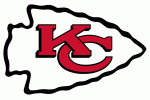

1 ¿Qué es el juego?
El fútbol americano enfrenta a dos equipos de 11 jugadores en el campo. El equipo que ataca (tiene el balón) intenta llevarlo hasta la zona de anotación contraria. El otro equipo defiende e intenta detenerlo.
La regla clave: el ataque tiene 4 intentos (downs) para avanzar 10 yardas. Si lo logra, recibe otros 4 intentos. Si no, entrega el balón.
2 ¿Cuánto dura y cómo se reparte el tiempo?
Un partido tiene 60 minutos de reloj divididos en 4 cuartos de 15 minutos, con un descanso al medio. Pero el reloj se detiene con frecuencia (pase incompleto, salida de la cancha, tiempo fuera), así que un partido real dura cerca de 3 horas.
Toca cada tramo para ver qué pasa en él.
3 ¿Cuántos equipos hay?
La NFL tiene 32 equipos en dos conferencias, AFC y NFC, de 16 equipos cada una. Cada conferencia se divide en 4 divisiones (Este, Norte, Sur y Oeste) de 4 equipos. Cada equipo juega 17 partidos en la temporada regular. Siete equipos de cada conferencia llegan a los playoffs, y los dos campeones de conferencia juegan el Super Bowl.
Elige un equipo. Lo usaremos en el paso 5 para mostrarte cómo ataca.
4 ¿Qué hace cada jugador?
Los 11 jugadores en el campo cambian según si el equipo ataca, defiende o patea. Abre cada posición para ver qué hace.
5 ¿Qué es una formación?
Antes de cada jugada, el ataque se coloca de una forma concreta: cuántos corredores, cuántos receptores y dónde está el quarterback. Eso es la formación. Cambiarla es la manera en que el entrenador le plantea un problema distinto a la defensa.
Elige una formación, arrastra a los jugadores (o selecciónalos y usa las flechas del teclado) y compara con el equipo que quieras.

6 ¿Qué formación funciona mejor en cada cuarto?
Con los datos de jugadas de pase de las semanas 1 a 8 de la temporada 2021, así rindió cada formación según el cuarto.
"Éxito" es el porcentaje de jugadas que avanzaron lo suficiente: al menos el 40 % de las yardas que faltaban en 1.er down, el 60 % en 2.º, y todas en 3.º y 4.º. Solo se muestran formaciones con al menos jugadas en ese cuarto. Se omiten el tiempo extra y las formaciones muy raras (Wildcat). Los datos no indican causa: una formación puede verse mejor porque se usa en situaciones más fáciles.
7 Simulador de jugada: predice y mira cómo se desarrolla
Elige quién ataca y quién defiende, la formación, el intento, el cuarto y las yardas. El modelo estima qué puede pasar usando las estadísticas reales de cada equipo (semanas 1 a 8 de 2021) y, al ejecutar la jugada, sortea un resultado según esas probabilidades y lo anima paso a paso: alineación, snap, rutas, presión, cobertura y tackle.